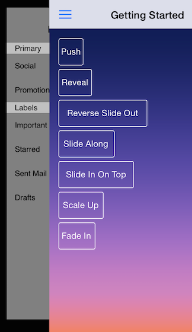
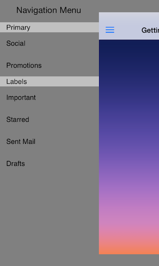

TKSideDrawer: Transitions
TKSideDrawer transitions let you use different animation effects for showing/dismissing. You can also easily create your custom animation by subclassing the base class TKSideDrawerTransition.

The available transitions are:
| Transition Type | Figures |
|---|---|
| Push | |
| Reveal | |
| ReverseSlideOut | |
| SlideAlong | |
| SlideInOnTop | |
| ScaleUp | |
| FadeIn |
The default transition is SlideInOnTop. In order to change the transition type, you should set the transition property of TKSideDrawer:
Objective-C
self.sideDrawer.transition = TKSideDrawerTransitionTypeReveal;
Swift
self.sideDrawer.transition = TKSideDrawerTransitionType.Reveal
You can configure the speed of the transition setting the transitionDuration property of TKSideDrawer:
Objective-C
self.sideDrawer.transitionDuration = .2;
Swift
self.sideDrawer.transitionDuration = 0.2
Using Custom Transitions
You can create a custom transition by sublcassing TKSideDrawerTransition and overriding its methods. After you create your transtion you should tell the side drawer to use it by setting its transitionManager property.

Objective-C
self.sideDrawer.transitionManager = [[ScaleContentTransition alloc] initWithSideDrawer:self.sideDrawer];
Swift
sideDrawer.transitionManager = ScaleContentTransition(sideDrawer: sideDrawer)